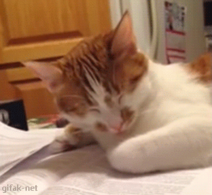
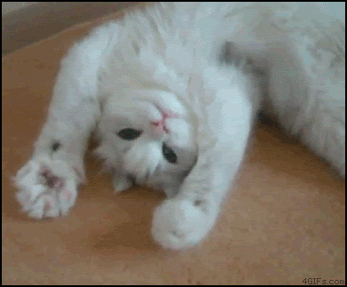

Je me nomme NGOUNOU NGOUBEYOU bony junior, je suis originaire du Cameroun et j’adore les chats.   Je suis aussi bénévole et pour cela je fais don de mon sang chaque 03 mois.
Mes deux passions sont l’entreprenariat et le développement web. Je suis actuellement la formation CS50’s Web Programming with Python and JavaScript, dans le but d’assoir des compétences efficaces pour le développement d’applications web car je n’ai pas une formation académique de développeur mais j’ai beaucoup évolué de manière autodidacte.
Par ailleurs je suis stagiaire chez le concessionnaire d’électricité de ma région (ENEO) où j’ai la charge de développer un outil de gestion du réseau électrique, j’en fait une plus grande explication la rubrique « Ma tâche chez le gestionnaire d’électricité ».
Je vous parlerai également de mon évolution dans l’entrepreneuriat (rubrique « Mes aventures entrepreneuriales »)